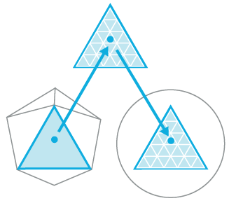

The Direct3D 11 runtime supports three new stages that implement tessellation, which converts low-detail subdivision surfaces into higher-detail primitives on the GPU. Tessellation tiles (or breaks up) high-order surfaces into suitable structures for rendering.
By implementing tessellation in hardware, a graphics pipeline can evaluate lower detail (lower polygon count) models and render in higher detail. While software tessellation can be done, tessellation implemented by hardware can generate an incredible amount of visual detail (including support for displacement mapping) without adding the visual detail to the model sizes and paralyzing refresh rates.
Tessellation:
The Direct3D 11 pipeline implements tessellation in hardware, which off-loads the work from the CPU to the GPU. This can lead to very large performance improvements if an application implements large numbers of morph targets and/or more sophisticated skinning/deformation models. To access the new tessellation features, you must learn about some new pipeline stages.
Tessellation uses the GPU to calculate a more detailed surface from a surface constructed from quad patches, triangle patches or isolines. To approximate the high-ordered surface, each patch is subdivided into triangles, points, or lines using tessellation factors. The Direct3D 11 pipeline implements tessellation using three new pipeline stages:
The following diagram highlights the new stages of the Direct3D 11 pipeline.
The following diagram shows the progression through the tessellation stages. The progression starts with the low-detail subdivision surface. The progression next highlights the input patch with the corresponding geometry patch, domain samples, and triangles that connect these samples. The progression finally highlights the vertices that correspond to these samples.

A hull shader -- which is invoked once per patch -- transforms input control points that define a low-order surface into control points that make up a patch. It also does some per patch calculations to provide data for the tessellation stage and the domain stage. At the simplest black-box level, the hull-shader stage would look something like the following diagram.
A hull shader is implemented with an HLSL function, and has the following properties:
At a deeper level, a hull-shader actually operates in two phases: a control-point phase and a patch-constant phase, which are run in parallel by the hardware. The HLSL compiler extracts the parallelism in a hull shader and encodes it into bytecode that drives the hardware.
Here's an example of a hull shader:
[patchsize(12)]
[patchconstantfunc(MyPatchConstantFunc)]
MyOutPoint main(uint Id : SV_ControlPointID,
InputPatch<MyInPoint, 12> InPts)
{
MyOutPoint result;
...
result = TransformControlPoint( InPts[Id] );
return result;
}
For an example that creates a hull shader, see How To: Create a Hull Shader.
The tessellator is a fixed-function stage initialized by binding a hull shader to the pipeline (see How To: Initialize the Tessellator Stage). The purpose of the tessellator stage is to subdivide a domain (quad, tri, or line) into many smaller objects (triangles, points or lines). The tessellator tiles a canonical domain in a normalized (zero-to-one) coordinate system. For example, a quad domain is tessellated to a unit square.
The tessellator operates once per patch using the tessellation factors (which specify how finely the domain will be tessellated) and the type of partitioning (which specifies the algorithm used to slice up a patch) that are passed in from the hull-shader stage. The tessellator outputs uv (and optionally w) coordinates and the surface topology to the domain-shader stage.
Internally, the tessellator operates in two phases:
| Type of Partitioning | Range |
|---|---|
| fractional_odd | [1...63] |
| fractional_even | TessFactor range: [2..64] |
| integer | TessFactor range: [1..64] |
| pow2 | TessFactor range: [1..64] |
A domain shader calculates the vertex position of a subdivided point in the output patch. A domain shader is run once per tessellator stage output point and has read-only access to the tessellator stage output UV coordinates, the hull shader output patch, and the hull shader output patch constants, as the following diagram shows.

Properties of the domain shader include:
After the domain shader completes, tessellation is finished and pipeline data continues to the next pipeline stage (geometry shader, pixel shader etc). A geometry shader that expects primitives with adjacency (for example, 6 vertices per triangle) is not valid when tessellation is active (this results in undefined behavior, which the debug layer will complain about).
Here is an example of a domain shader:
void main( out MyDSOutput result,
float2 myInputUV : SV_DomainPoint,
MyDSInput DSInputs,
OutputPatch<MyOutPoint, 12> ControlPts,
MyTessFactors tessFactors)
{
...
result.Position = EvaluateSurfaceUV(ControlPoints, myInputUV);
}
Tessellation is implemented with two new programmable shader stages: a hull shader and a domain shader. These new shader stages are programmed with HLSL code that is defined in shader model 5. The new shader targets are: hs_5_0 and ds_5_0. Like all programmable shader stages, code for the hardware is extracted from compiled shaders passed into the runtime when shaders are bound to the pipeline using APIs such as DSSetShader and HSSetShader. But first, the shader must be created using APIs such as CreateHullShader and CreateDomainShader.
Enable tessellation by creating a hull shader and binding it to the hull-shader stage (this automatically sets up the tessellator stage). To generate the final vertex positions from the tessellated patches, you will also need to create a domain shader and bind it to the domain-shader stage. Once tessellation is enabled, the data input to the input-assembler stage must be patch data. That is, the input assembler topology must be a patch constant topology from D3D11_PRIMITIVE_TOPOLOGY set with IASetPrimitiveTopology.
To disable tessellation, set the hull shader and the domain shader to NULL. Neither the geometry-shader stage nor the stream-output stage can read hull-shader output-control points or patch data.
New topologies for the input-assembler stage, which are extensions to this enumeration.
enum D3D11_PRIMITIVE_TOPOLOGY
The topology is set to the input-assembler stage using IASetPrimitiveTopology
Of course, the new programmable shader stages require other state to be set, to bind constant buffers, samples, and shader resources to the appropriate pipeline stages. These new ID3D11Device methods are implemented for setting this state.
The documentation also contains examples for initializing the tessellation stages.
| Item | Description |
|---|---|
| How To: Create a Hull Shader | Create a hull shader. |
| How To: Design a Hull Shader | Design a hull shader. |
| How To: Initialize the Tessellator Stage | Initialize the tessellation stage. |
| How To: Create a Domain Shader | Create a domain shader. |
| How To: Design a Domain Shader | Create a domain shader. |